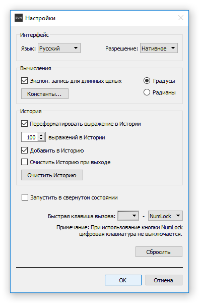

Окно Настройки может быть открыто как через Меню - Настройки, так и через комбинацию клавиш Ctrl-P (Preferences). Это окно является блокирующим, то есть манипуляции в главном окне возможны только после его закрытия.
Закрыть окно Настройки можно двумя способами: подтверждая или отменяя изменения кнопками ОК и Отмена, соответственно.

Окно Настройки.
Язык: выберите язык интерфейса через выпадающее меню (язык устанавливается исходя из Локальных настроек Системы во время Первого Старта - по умолчанию Английский, если язык в программе не найден).
Разрешение: выберите разрешение интерфейса с Нативного на Двойной через выпадающее меню (Двойное рекомендуется в случае разрешения экрана UltraHD или выше).
Экспон. запись для длинных целых: можете снять отметку, если длинный целочисленный результат в натуральном виде (15013093754529657235677197216425...) предпочтительней, чем экспоненциальная запись (1.5013093754529656e+68).
Константы: открывает диалог Константы и Переменные, для создания, изменения и удаления констант и переменных (смотр. Диалог Константы и Переменные).
Градусы / Раданы: меняет единицы угла в тригонометрии.
Переформатировать выражение в Истории: SUM по умолчанию форматирует все выражения в Истории - добавляя пробелы вокруг операторов "+", "-", "/", и между аргументами, удаляя лишние пробелы, и добавляя пропущенные нули перед точкой в десятичных числах.
Выражений в Истории: можете установить максимальное число записей в Истории - 100 по умолчанию, 250 максимум, в случае 0 История будет очищена и новые записи не будут добавляться (если текущее количество записей превышает установленный максимум, записи превышающие указанный лимит будут удалены начиная с конца).
Добавить в Историю: можете снять отметку, если не хотите добавлять последующие вычисления в Историю (существующие записи в Истории не будут задействованы).
Очистить Историю при выходе: если отметить - вся История будет очищена при выходе программы.
Очистить Историю: очистить всю Историю.
Запустить в свернутом состоянии: рекомендуется отметить для «тихого» старта, если программа запускается с системой (автозапуск следует устанавливать системными средствами, например - скопировать ярлык программы в папку Автозагрузка в Windows).
Быстрая клавиша вызова: установите Быструю клавишу вызова для активации (или перевода на передний план) и сворачивания программы с помощью клавиатуры. Если на клавиатуре нет ни клавиши NumLock, ни Цифрового блока - стоит установить одну из комбинаций Ctrl и клавиш F2 - F12 (примечание: если выбрана клавиша NumLock - NumLock будет во включенном состоянии постоянно).
Сбросить: сбрасывает все настройки, а также размеры и расположение главного окна.